Szczotka WC i papier toaletowy — wszystko ukryte w ścianie. Drzwi do pokrycia własnym kaflem lub z drzwiczkami szklanymi. Po zamknięciu — schowek jest ukryty dyskretnie i ładnie w ścianie.
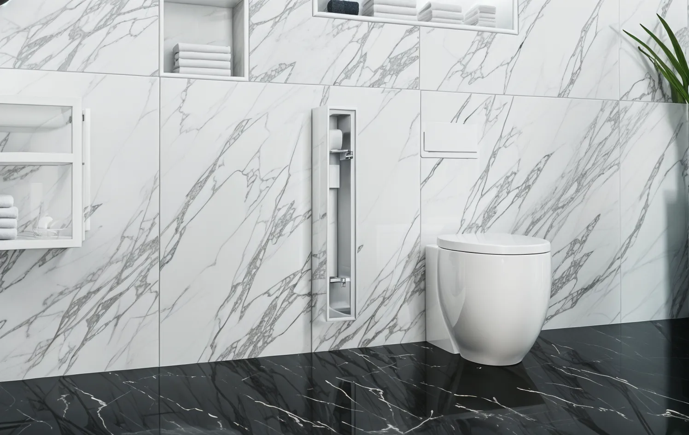
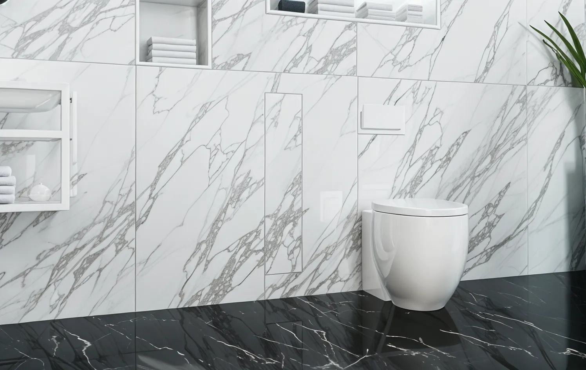
Kołnierz Zero — drzwi pokrywa się własnym kaflem. Po zamknięciu schowek znika w ścianie bez widocznych metalowych krawędzi.
Górna półka na papier toaletowy, dolna komora na szczotkę WC. Każda strefa niezależnie zamykana — pełna organizacja w jednej niszy.
Stalowy korpus ze stali nierdzewnej odpornej na wilgoć, parę wodną i środki chemiczne. Materiał na całe życie — bez korozji, bez odkształceń.
Montaż podtynkowy — schowek zajmuje przestrzeń wewnątrz ściany, nie zabiera cennych centymetrów podłogi ani powierzchni ściany.
Gładkie ścianki ze stali nie absorbują bakterii. Czyszczenie wilgotną ściereczką w kilka sekund. Szczotka schowana — brak nieprzyjemnych zapachów.
Producent z wieloletnim doświadczeniem. Schowki MCJ stosują wiodące pracownie architektoniczne w Polsce. Objęte 2-letnią gwarancją producenta.
Przesuń suwak i zobacz różnicę. Szczotka, papier — wszystko znika w ścianie. Pozostaje czysta, minimalistyczna przestrzeń.
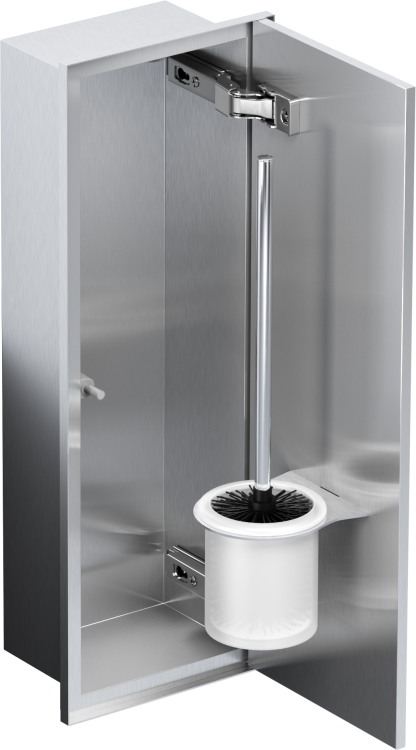
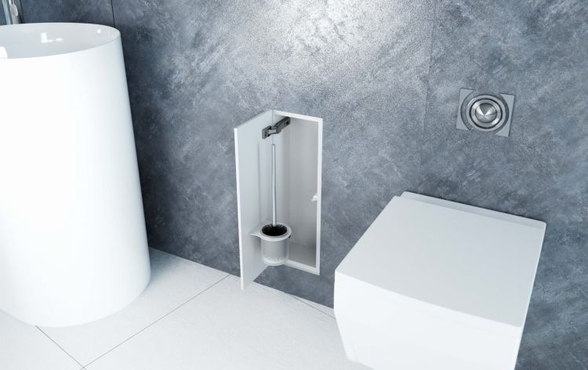
najedź → podglądKompaktowy schowek tylko na szczotkę WC. Stal nierdzewna INOX, zawiasy Blum Cristallo, odbojnik Blum Tip On. Idealny, gdy liczy się każdy centymetr.
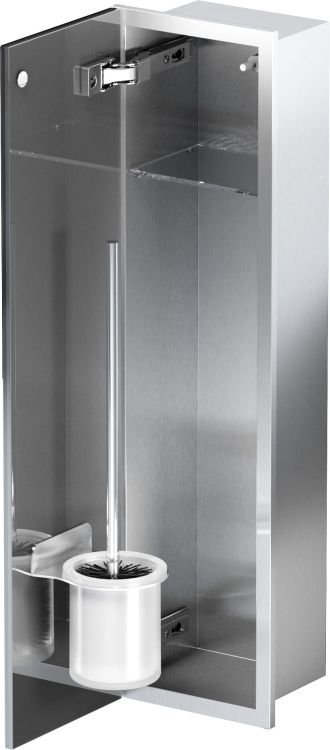
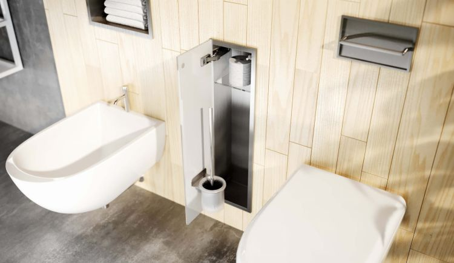
najedź → podglądSzczotka WC i papier toaletowy. Szklane drzwiczki, stal nierdzewna szlifowana. Kołnierz Bend delikatnie zachodzi na ścianę.
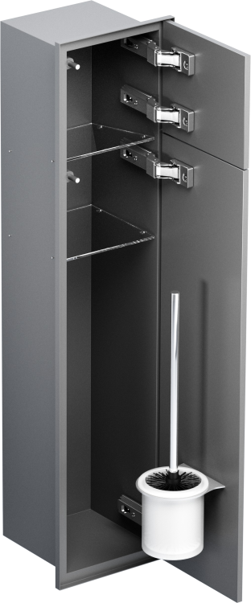
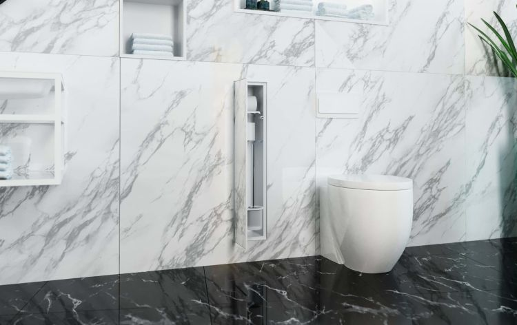
najedź → podglądSzczotka WC i papier toaletowy w oddzielnych sekcjach. Stal lakierowana, półki szklane. Kołnierz Zero — pełne zlicowanie ze ścianą.
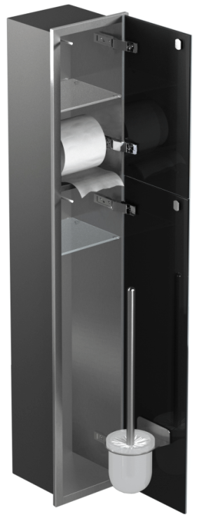
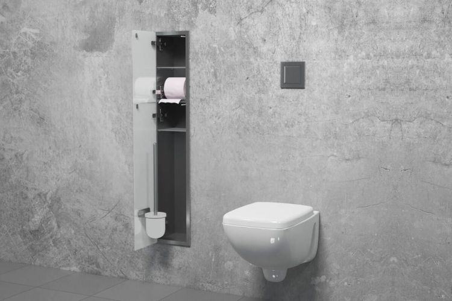
najedź → podglądNajwiększy model — dodatkowe miejsce na 2 zapasowe rolki papieru. Identyczna jakość INOX. Polecany do rodzinnych łazienek.
Schowek montuje się podczas prac wykończeniowych — przed kafelkowaniem ściany. Wymaga wykonania otworu w ścianie o precyzyjnych wymiarach. Możliwy montaż w ścianach z pustaków, gipsokartonu lub bloczków gazobetonowych (min. grubość ściany 15 cm).
Wytnij w ścianie otwór o wymiarach zgodnych z instrukcją danego modelu. Zaznacz obrys, wytnij i wyrównaj krawędzie. Minimalna grubość ściany to 15 cm.
Umieść stalowy korpus w otworze i wypoziomuj. Przymocuj do ściany zgodnie z instrukcją. W ściankach z płyt GK zastosuj dedykowaną ramę montażową MCJ.
Zamontuj drzwi i połóż na nich kafle identyczne ze ścianą, zachowując ciągłość wzoru i fugi. W modelu ze szklanymi drzwiami ten krok nie jest wymagany.
Po wyschnięciu kleju zamontuj uchwyty i półki dołączone do zestawu, a następnie umieść w schowku szczotkę WC i papier toaletowy. Wyreguluj zawiasy, aby drzwi idealnie przylegały do ściany.
Wymiary otworu i korpusu zależą od wybranego modelu — szczegóły w instrukcji dołączonej do produktu.
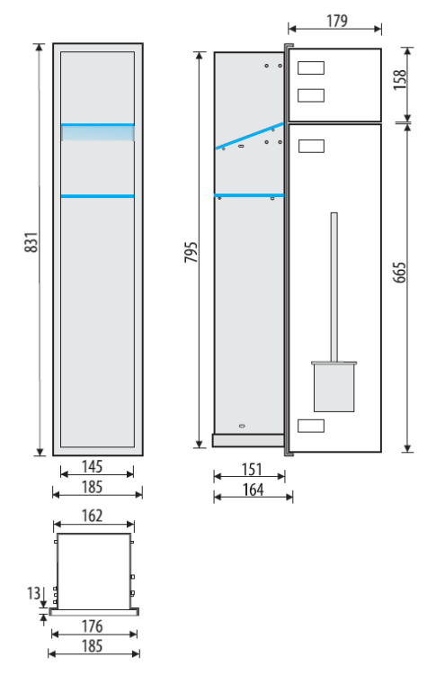
Kołnierz Zero oznacza całkowite zlicowanie frontu schowka z powierzchnią ściany. Brak widocznych wystających elementów metalowych — kafle na drzwiach schowka wyglądają jak normalna część ściany.
Ważne przed montażem: Schowek należy osadzić w ścianie przed ułożeniem płytek. Minimalna grubość ściany to 15 cm. W ściankach z płyt GK wymagana jest dodatkowa rama montażowa podtynkowa MCJ. Nie zaleca się montażu w ścianach nośnych bez konsultacji z konstruktorem. Przed wycięciem otworu sprawdź brak instalacji elektrycznej i wodnej w ścianie.
Wszystkie modele MCJ dostępne w sklepie Kaczucha.pl — szybka dostawa, gwarancja producenta, bezpieczne płatności.
Przejdź do sklepuPełna oferta schowków podtynkowych na kaczucha.pl